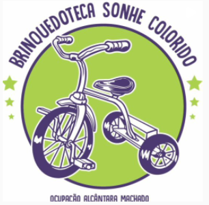
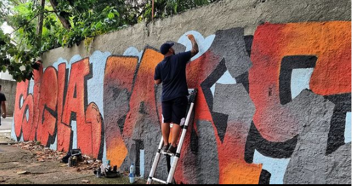

Nossas Ações

A Brinquedoteca Sonhe Colorido é um projeto desenvolvido para as crianças da Ocupação Alcântara Machado. É um local lúdico, colorido e que ajuda a reforçar o aprendizado.

Este coletivo é composto por um grupo de grafiteiros que ocupam favelas e ocupações levando cor e a arte do grafite a esses locais.
No Id Inclusão Digital, consertamos equipamentos que seriam descartados e doamos para locais que precisam. Além disso, também damos acesso à internet ao local.